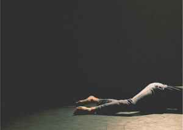

upcoming performances |
|||
|
the CURRENT SESSIONS The CURRENT SESSIONS is a contemporary dance series which presents works from choreographers in NYC and beyond. Volume III, Issue II. will feature 10 choreographers and 1 dance film in 4 diverse programs. Fresh, raw, experimental, and curious, the CURRENT SESSIONS offers a glimpse of what dance is right now, and what it will look like in the future. |
 | ||
|
FRIDAY, AUGUST 23rd // 7:30pm SATURDAY, AUGUST 24th // 7:30pm SUNDAY, AUGUST 25th // 3pm with TalkBack SUNDAY, AUGUST 25th // 6:30pm Check out our newest initiatives for the summer season, including LAB // SESSION, a workshop series from Monday, August 19th to Thursday, August 22nd, for both professional dancers and people alike, and SESSIONSxOUT, a site-specific pop-up *FREE* performance happening in several locations throughout NYC and Brooklyn on Saturday, August 17th from 12-6pm, all leading up to the SESSIONS! MORE INFORMATION: www.thecurrentsessions.com We ALWAYS need your SUPPORT! To make a tax-deductible donation today, go to our Artist profile on New York Live Arts at: http://newyorklivearts.org/artist/thecurrentsessions. We thank you ahead of time for your believe in our mission for the dance community, and for the world at large! |
|||
upcoming performances |
|||
 |
|||
| EVQ Film Festival 2018 August 20-25 |
|||
performance archives |
|||
| 2018 | 2017 | 2016 | 2015 |
| 2014 | 2013 | 2012 | 2011 |
| 2010 | 2009 | 2008 | 2007 |